Git Course
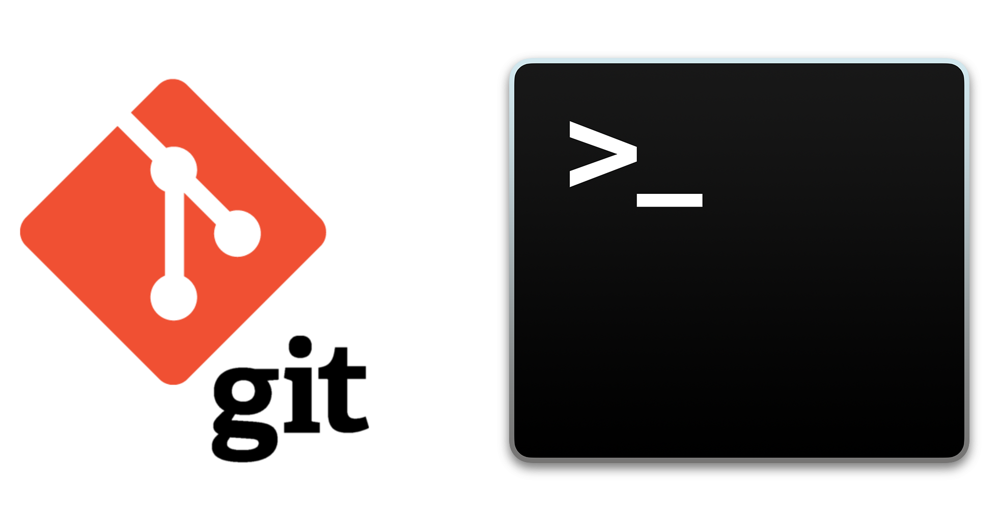Created by: Simón Ovidio Miranda Chiri /ovidio.miranda@jalasoft.com
Agenda
- Introduction
- Installation
- Initial Git Configuration
- Creating a Git repo
- Remote repository
- Create
- Push
- Pull
- Clone
Agenda
- Branch management
- Creating
- Swith to a different branch
- Merging changes from a branch
- Deleting
- Renaming
- List all branches
- Resolving conflicts
- Extras
- Git Resources
Introduction
WHAT IS GIT?
“Git is a distributed version-control system for tracking changes in source code during software development.”
WHAT IS GIT?
- A system that keep records of your changes.
- Allows for collaborative development.
- Allows you to know who made what changes and when.
- Allows you to revert any changes and go back to a previous state.
Installation
git --versiongit version 2.32.0.windows.1Initial Git Configuration
Your Identify:git config --global user.name "Your Name"git config --global user.email example@gmail.comgit config --global core.editor vimgit config --global -lgit config --global -eCreating a Git repo
Creating a Git repo
You first need to go to that project’s directory.cd C:my_projectgit initGit areas
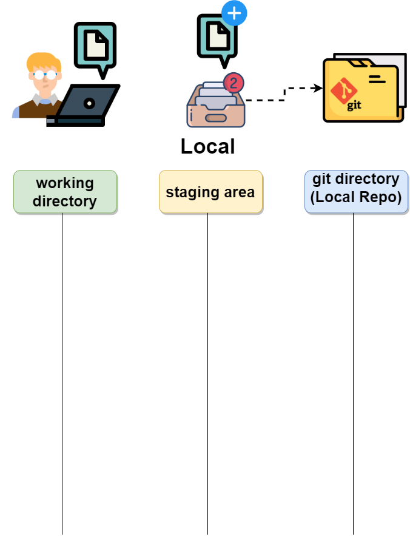Git areas
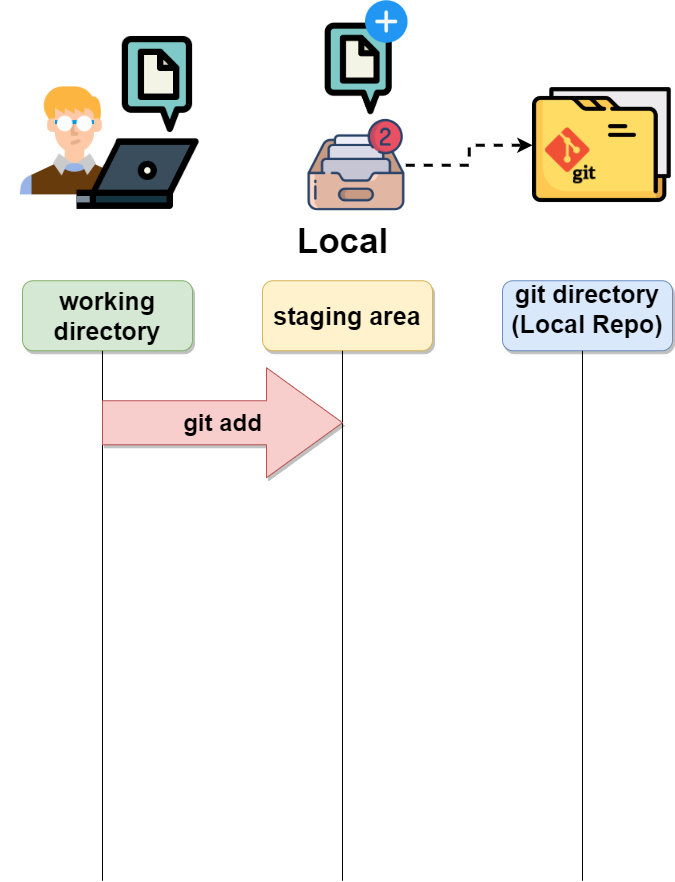Git areas
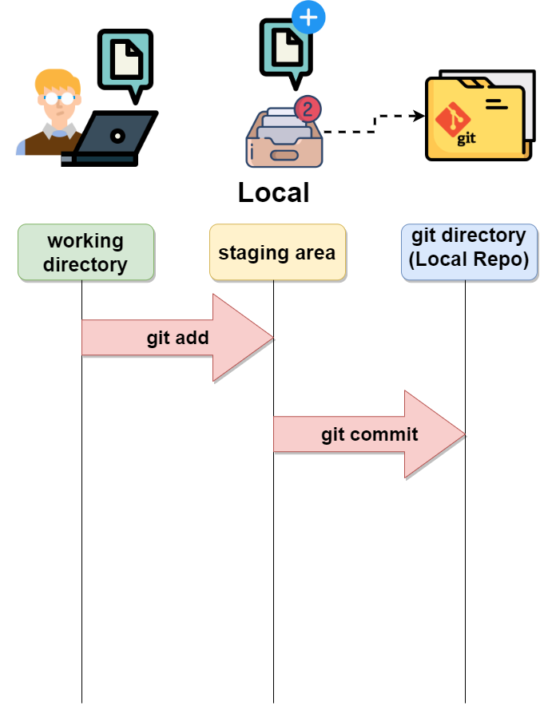Adding a file
Create a file.vim first.txt
Method A
Method B
Method C
Adding a file
git add first.txtgit add .git add --allgit add -AAdding a file
Directories nested in a project.
git add *second.txtAdding a file
git add --pathgit add -pAdding a file
Interactive interface.git add --interactivegit add -iAdding a file
Interactive interface.
Adding a file
Interactive interface.
Adding a file
Check the status.git statusgit status --shortgit status -sAdding a file
Commit a file.git commit -m "My first commit in this repo"Remote repository
Git areas
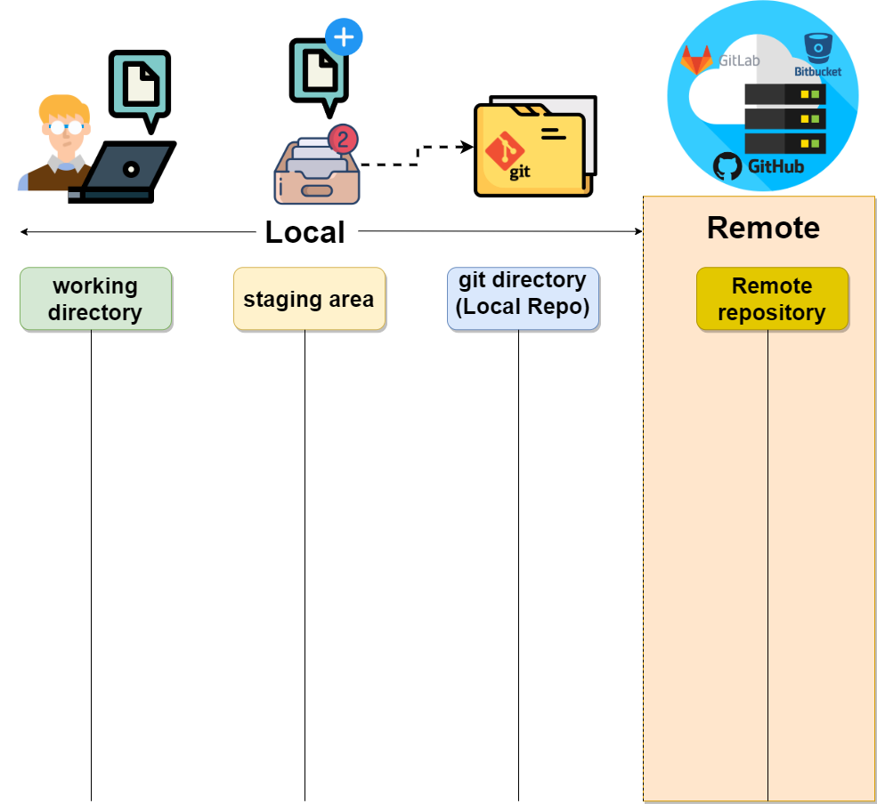Git areas
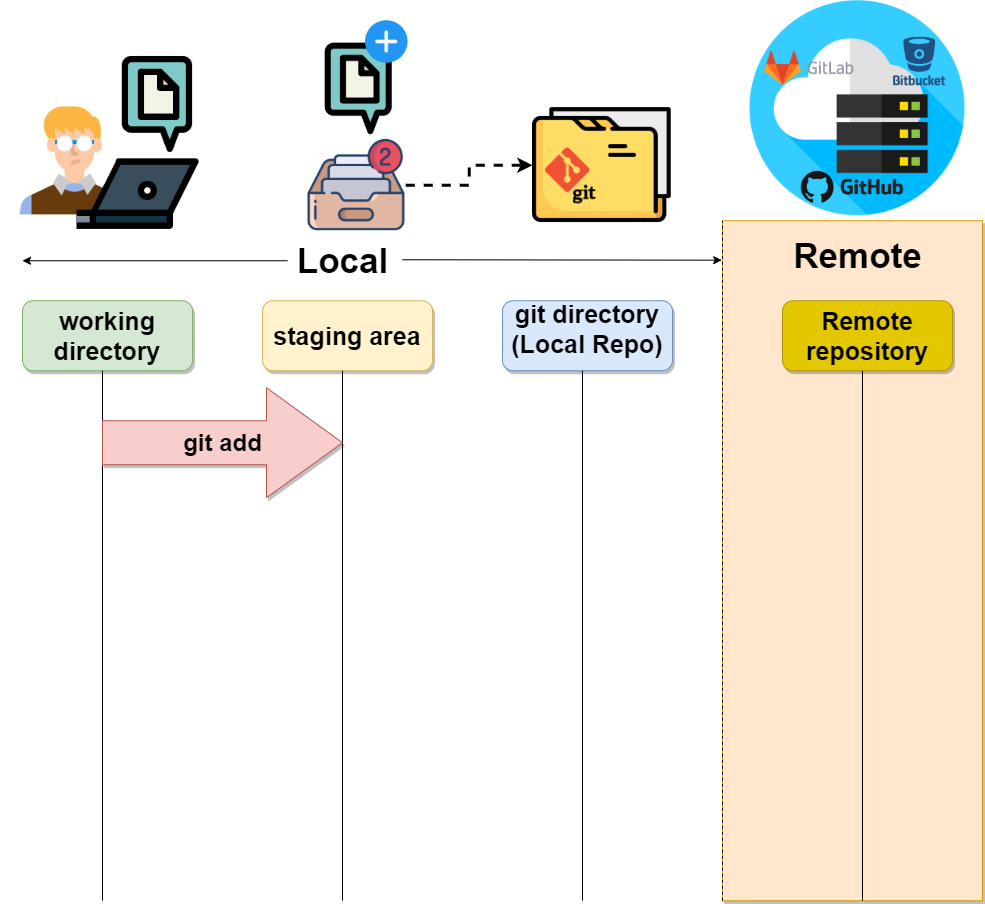Git areas
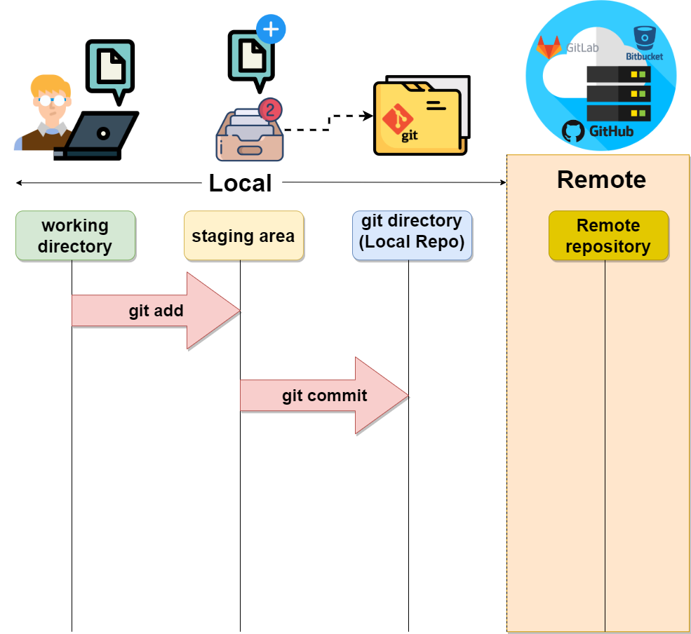Git areas
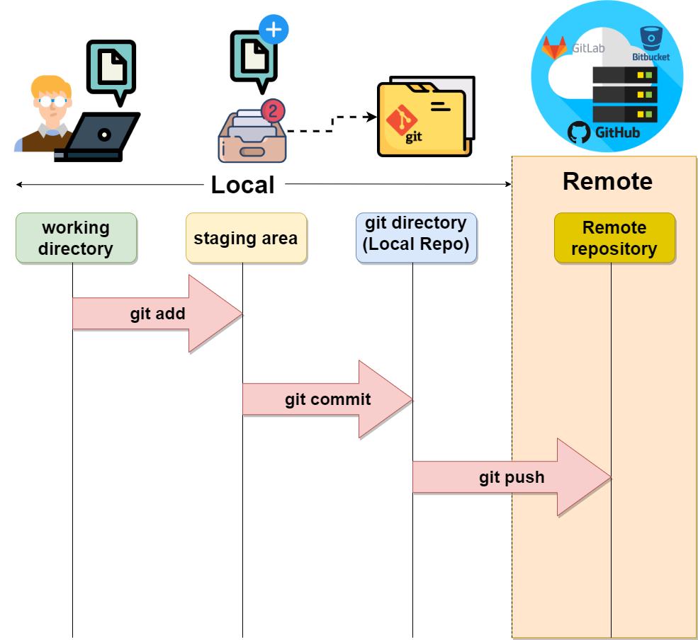Git areas

Remote repository
Create the remote repository. 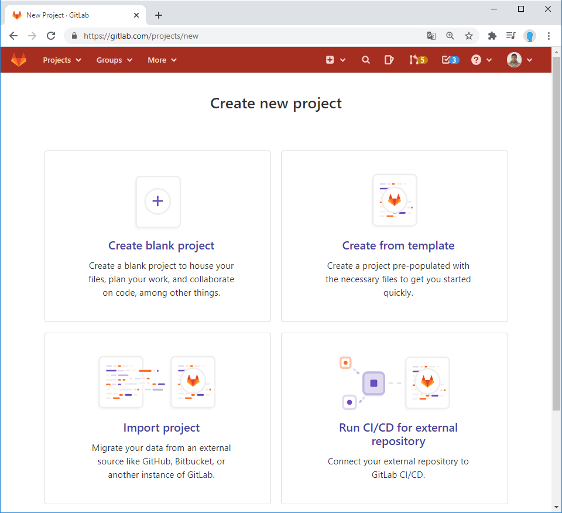Remote repository
Add a Remote Repository.
git remote show originRemote repository
Pushing to a remote repository.
Remote repository
Cloning an existing Repository.
Remote repository
Pulling changes from a remote repository.
Branch Management
Branch Management
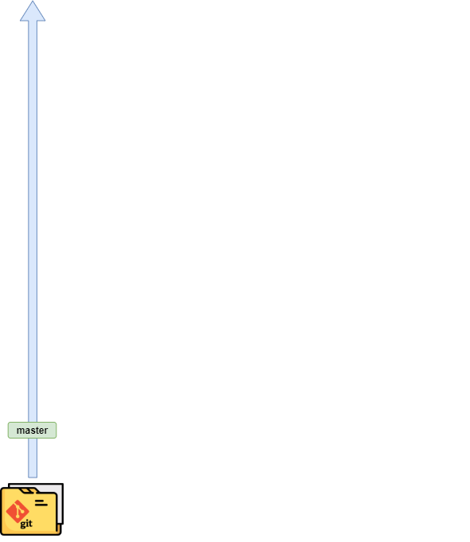Branch Management
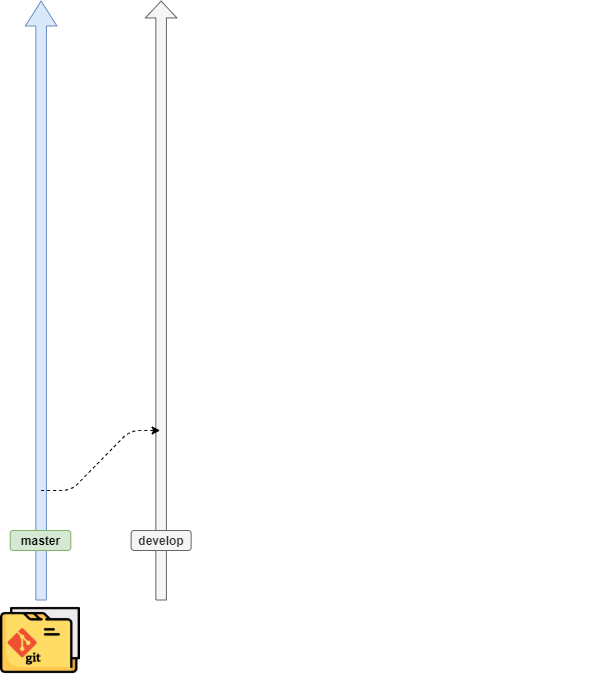Branch Management
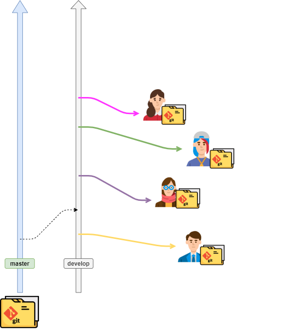Branch Management
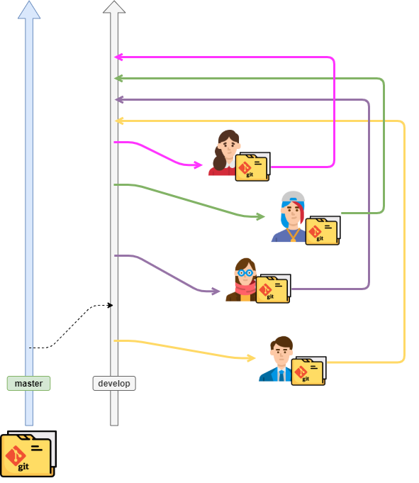Branch Management
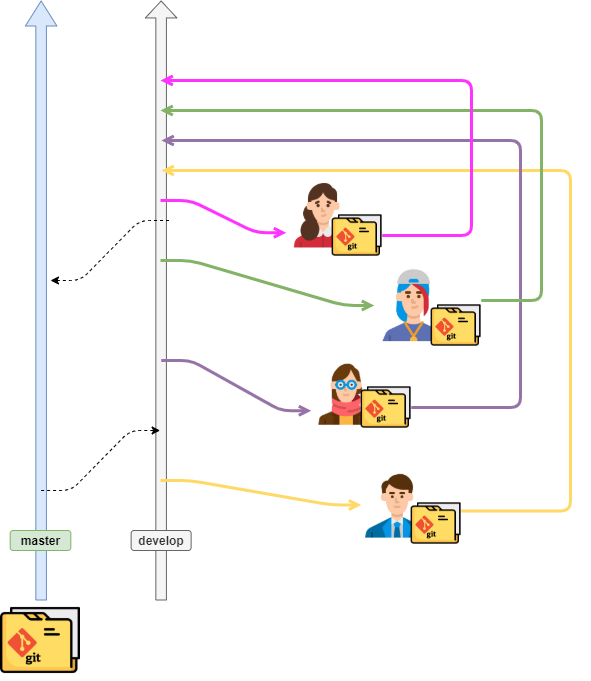Branch Management
Creating new Branch.
git branch develop
git checkout develop
git checkout -b feature-XBranch Management
To merge changes from a branch into another branch
Checkout the branch you want to update.
git checkout develop
git merge feature-X
git merge origin/feature-XBranch Management
Create a branch and merge changes.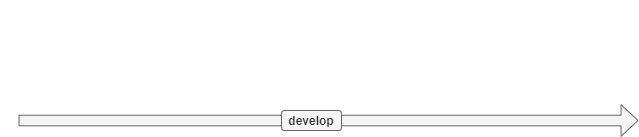
Branch Management
Create a branch and merge changes.git checkout -b feature-X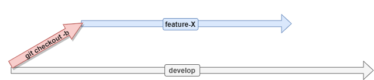
Branch Management
Create a branch and merge changes.git checkout -b feature-Xgit checkout developgit merge feature-XBranch Management
Deleting a branch.
git branch -d feature-01
git branch -D feature-01Branch Management
Renaming the current branch.
git branch -m feature-2
git branch -m feature-2 feature-02Branch Management
List local branches.git branchgit branch -rgit branch -aResolving conflicts
Resolving conflicts
Set vimdiff as a git mergetool.git config --global merge.tool vimdiffgit config --global merge.conflictstyle diff3git config --global mergetool.prompt falsegit mergetoolResolving conflicts
Git Merge tool: Vimdiff
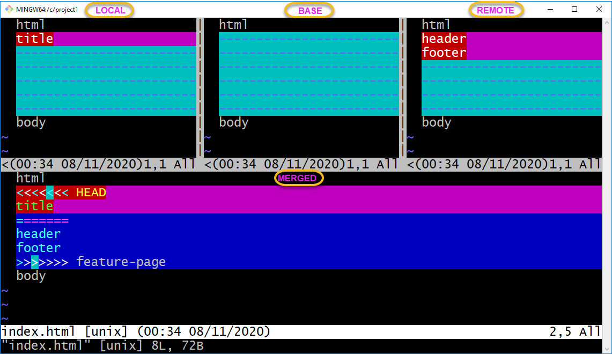- LOCAL is how the file looked in your target branch.
- BASE is how the file looked before both changes.
- REMOTE is how the file looked in your source branch.
- MERGED is the merge result, this is what gets saved in the repo.
Resolving conflicts
Vim diffget commands:
:diffget LOCAL:diffget BASE:diffget REMOTE:diffg LO:diffg BA:diffg REResolving conflicts
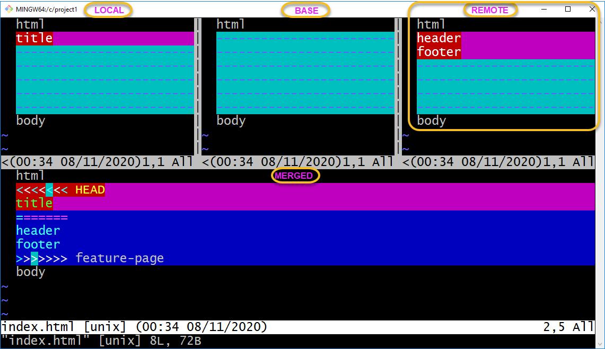:diffget REMOTESave the merge result, and quit all windows.
:wqaNow you are ready to commit your changes.
git commit -m "Resolved conflicts"Extras
Extras
Change the message of the last commit.
git commit --amend -m "Update commit message"Add changes to the last commit without changing its commit message.
git add new_filegit commit --amend --no-editGit aliases
Git aliases
Git aliases are a powerful tool that create shortcuts to frequently used Git commands.
git config --global alias.st statusgit stExtras
Ignore changes in tracked files with Git.
To return to normal.
Using aliases.
git config --global alias.unwatch 'update-index --assume-unchanged'git config --global alias.watch 'update-index --no-assume-unchanged'git unwatch first.txtgit watch first.txtExtras
See the changes in the working directory.
git diffShow name of files changed.
git diff --name-onlyShow all files in conflict.
git diff --name-only --diff-filter=UTags
Tags
Git has the ability to tag specific points in a repository’s history as being important.
Creating a tag.
git tag -a v2.0 -m "My version 2.0"
git tag -a v1.0 3643c10 -m "My version 1.0"Push the tags to the remote repository.
git push origin --tagsTags
See local tags.
git taggit show v1.0Checking out Tags.
git checkout v1.0git checkout -b version2 v2.0.0Deleting a tag.
git tag -d v1.0Extras
Delete untracked directories and untracked files.git clean -fd
git branch --merged develop | grep -v '^\*' | xargs -n 1 git branch -dgit gcExtras
Viewing the Commit Historygit log --oneline -5git log --oneline -5 --pretty="%C(Yellow)%h %C(reset)%ad (%C(Green)%cr%C(reset))%x09 %C(Cyan)%an: %C(reset)%s" --date=shortgit log --graphReturn to a previous commit
Return to a previous commit
To temporarily jump back to that commit.git checkout 789abcdgit reset --soft HEAD^git reset --hard HEAD^git revert HEAD^Recovering
Recovering
git reflog -5 --date=format:'%Y-%m-%d %H:%M:%S' --format='%C(auto)%h - %an%x08 - %C(green)%ad -%C(blue)%cr -%C(reset) %gs (%s)'You're back where you started
git reset --hard 2be3846Extras
Copying a commit from one branch to another
git cherry-pick 2be3846git checkout -Stashing and Cleaning
Stashing and Cleaning
To quickly save your work you can use.git stashgit stash applygit stash popStashing and Cleaning
Save all changes and put a message to identify.git stash save -u "Add Main page"git stash liststash@{0}: On feature-page: Add Main page
git stash apply 0Stashing and Cleaning
Remove a single stash entry from the list of stash entries.
git stash drop 0Hooks
Hooks
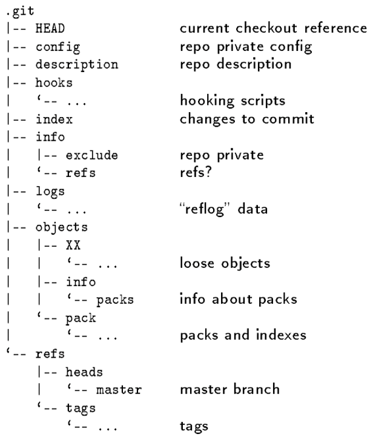project-name/.git/hooksHooks
vim .git/hooks/pre-push
#!/bin/bash
protected_branch='master'
current_branch=$(git symbolic-ref HEAD | sed -e 's,.*/\(.*\),\1,')
if [ $protected_branch = $current_branch ]
then
read -p "You're about to push master, is that what you intended? [y|n] " -n 1 -r < /dev/tty
echo
if echo $REPLY | grep -E '^[Yy]$' > /dev/null
then
exit 0 # push will execute
fi
exit 1 # push will not execute
else
exit 0 # push will execute
fi
Hooks
rm .git/hooks/pre-pushvim .git/hooks/pre-push
#!/bin/bash
current_branch=$(git rev-parse --abbrev-ref HEAD)
target_branch='develop'
git_ahead_and_behind=$(git rev-list --left-right --count origin/$target_branch...$current_branch | awk '{print ""$1"-"$2""}')
behind=$(echo $git_ahead_and_behind | cut -f1 -d-)
if [ $behind -gt 0 ];
then
echo -e "\e[31mAlert:\e[0m The '$current_branch' branch does not have the latest changes from the '$target_branch' branch."
echo "The source branch is '$behind' commits behind the target branch".
fi
Hooks
vim .git/hooks/pre-push
#!/bin/bash
read -p "Do you want to execute the Javadoc task? [y|n] " -n 1 -r < /dev/tty
echo
if echo $REPLY | grep -E '^[Yy]$' > /dev/null; then
echo "** Executing the Javadoc task **"
gradle javadoc
echo "** Finished the Javadoc task **"
else
echo "** The javadoc task was not executed **"
fi
Hooks
vim .git/hooks/pre-push
#!/bin/bash
# Section 1.
current_branch=$(git rev-parse --abbrev-ref HEAD)
target_branch='develop'
git_ahead_and_behind=$(git rev-list --left-right --count origin/$target_branch...$current_branch | awk '{print ""$1"-"$2""}')
behind=$(echo $git_ahead_and_behind | cut -f1 -d-)
if [ $behind -gt 0 ];
then
echo -e "\e[31mAlert:\e[0m The '$current_branch' branch does not have the latest changes from the '$target_branch' branch."
echo -e "The source branch is '$behind' commits behind the target branch\n"
fi
# Section 2.
read -p "Do you want to execute the Javadoc task? [y|n] " -n 1 -r < /dev/tty;
if echo $REPLY | grep -E '^[Yy]$' > /dev/null
then
echo -e "\n** Executing the Javadoc task **"
gradle javadoc
echo -e "\n** Finished the Javadoc task **"
else
echo -e "\n\e[31m** The javadoc task was not executed **\e[0m"
fi
Git Resources
Git Resources
You can get help from a command(add, commit, reset, etc.)git help addGit Resources
You can get help from a command(add, commit, reset, etc.)
git add -h
Git Resources
You can get help from a command(add, commit, reset, etc.)
Git Resources
Visualizing Git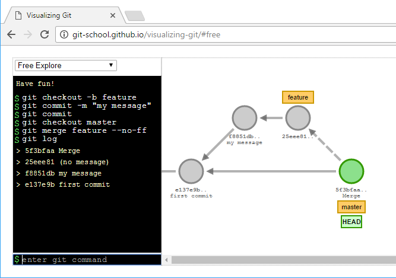
Git Resources
Pro Git (Second Edition), Scott Chacon and Ben Straub.
Git Resources
Git Notes for Professionals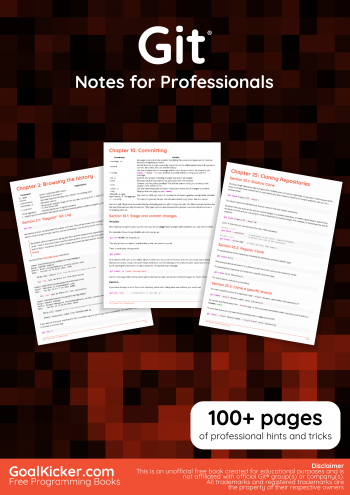